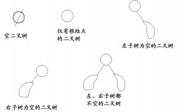

二叉树的定义
二叉树要么为空，要么由根节点，左子树和右子树组成，左子树和又子树分别是一棵二叉树。
二叉树的形态
二叉树有五种基本形态，分别是空树，只有一个根节点的二叉树，只有左子树的二叉树，只有右子树的二叉树，左子树和又子树都健全的二叉树，如图所示

注意：二叉树不是树的特殊形式
二叉树的性质
(1) 在非空二叉树中，第i层的结点总数不超过，i>=1.
(2) 深度为h的二叉树最多有个结点(h>=1)，最少有h个结点；
(3) 对于任意一棵二叉树，如果其叶结点数为N0，而度数为2的结点总数为N2，则N0=N2+1；
(4) 具有n个结点的完全二叉树的深度为
(5)有N个结点的完全二叉树各结点如果用顺序方式存储，则结点之间有如下关系：
若I为结点编号,则 如果I>1，则其父结点的编号为I/2；
如果2I<=N，则其左儿子（即左子树的根结点）的编号为2I；若2I>N，则无左儿子；
如果2I+1<=N，则其右儿子的结点编号为2I+1；若2I+1>N，则无右儿子。
(6)给定N个节点，能构成h(N)种不同的二叉树。
h(N)为卡特兰数的第N项。h(n)=C(2*n，n)/(n+1)。
（7）设有i个枝点，I为所有枝点的道路长度总和，J为叶的道路长度总和J=I+2i
二叉树的存储结构
链式存储方式：
typedef struct node
{
char data;
node *lch, *rch;
} BiTNode, *BiTree;
二叉树的遍历
二叉树有四种遍历方法，以根节点来区分，先根遍历，中根遍历，后根遍历，每种遍历又有递归遍历和非递归遍历两种遍历形式，还有一种层次遍历。
（1）先根遍历
先遍历根节点，再遍历左子树，最后遍历右子树。
递归遍历方法
void preOrder(BiTree T)
{
if(T)
{
printf("%c ",T->data);
preOrder(T->lch);
preOrder(T->rch);
}
}
非递归遍历方法
void notpreOrder(BiTree T)
{
stack<BiTNode> stk;//这是一个栈结构，先进后出
if(T)
{
bool flag = true;
while(flag)
{
while(T)
{
printf("%c ",T->data);
stk.push(*(T));
T = T->lch;
}
if(stk.empty())
flag = false;
else
{
BiTNode p = stk.top();
stk.pop();
T = p.rch;
}
}
}
}
（2）中序遍历
先遍历左子树，再遍历根节点，最后遍历右子树
递归算法实现
void inOrder(BiTree T)
{
if(T)
{
inOrder(T->lch);
printf("%c ",T->data);
inOrder(T->rch);
}
}
非递归算法实现
void notinOrder(BiTree T)
{
stack<BiTNode> stk;
if(T)
{
bool flag = true;
while(flag)
{
while(T)
{
stk.push(*T);
T = T->lch;
}
if(stk.empty())
flag = false;
else
{
BiTNode p = stk.top();
stk.pop();
printf("%c ",p.data);
T = p.rch;
}
}
}
}
（3）后序遍历
先遍历左子树，再遍历右子树，最后遍历根节点
递归算法实现
void postOrder(BiTree T)
{
if(T)
{
postOrder(T->lch);
postOrder(T->rch);
printf("%c ",T->data);
}
}
非递归算法实现
void notpostOrder(BiTree T)
{
stack<BiTNode> stk1;
stack<char> stk2;
if(T)
{
stk1.push(*T);
while(!stk1.empty())
{
BiTNode p = stk1.top();
stk1.pop();
stk2.push(p.data);
if(p.lch) stk1.push(*(p.lch));
if(p.rch) stk1.push(*(p.rch));
}
}
while(!stk2.empty())
{
printf("%c ",stk2.top());
stk2.pop();
}
}
（4）层次遍历
void leveloreder(BiTree T)
{
queue<BiTNode> que;
que.push(*T);
while(!que.empty())
{
BiTNode p = que.top();
que.pop();
printf("%c ",p.data);
if(p.lch) que.push(*(p.lch));
if(p.rch) que.push(*(p.rch));
}
}
二叉树的建立
想要遍历，总得有树可以遍历吧，所以我们还要学一学建树。。。
二叉树的建立可以根据前序和中序序列建立，也可以根据中序和后序序列遍历
这里的建树是只知道树中结点的标记，不一定是满二叉树，且没有结点的地方并没有特殊标记。
（1）已知先序序列和中序序列建树
基本思想：先序序列的根节点总是在第一个位置，中序序列的根节点总是在相对中间的位置，找到中序序列的根节点，那么根结点的左面结点就是根节点的左子树上的结点，右面结点就是根节点的右子树上的节点。
int find(char ch,char *ins,int s,int e)
{
for(int i = s;i <= e;i++)
{
if(ch == ins[i])
return i;
}
return -1;
}
void createBiTree2(BiTree &T,char *pre,char *ins,int ps,int is,int n)
{
if(n <= 0)
T = NULL;
else
{
int k = find(pre[ps],ins,is,is + n - 1);
if(k == -1) T = NULL;
else
{
T = new BiTree;
T->data = pre[ps];
if(k == is)
T->lch = NULL;
else
{
createBiTree2(BiTree T->lch,pre,ins,ps+1,is,k-is);
}
if(k == is + n - 1)
T->rch = NULL;
else
{
createBiTree2(BiTree T->rch,pre,ins,ps+(k-is)+1,k+1,n-(k-is)-1);
}
}
}
}
已知先序序列和中序序列，还有一种更好理解的方法建树
void js(BiTree &T,char *pre,char *ins,int len)//因为T指向的内容在函数内又重新开辟了内存，所以传递T的地址，这样保证指针///不会指错。。。。。。
{
if(len == 0)
{
T = NULL;
return ;
}
T = new BiTNode;
T->data = *pre;
int i = 0;
for(i; i < len; i++)
{
if(ins[i] == *pre)
break;
}
//每一次的递归都是对一棵小的子树进行的操作
js(T->lch,pre+1,ins,i);
js(T->rch,pre + i + 1,ins + i + 1,len - i - 1);
printf("%c ",T->data);
}
（2）已知中序序列和后序序列建树
从后序序列开始着手，因为后序序列的最后一个字符总是根结点的字符，所以根据这个字符在中序序列中找到位置，然后分出左子树和右子树，递归查找建树
void js(BiTree &T,char *ins,char *post,int len)
{
if(len == 0)
{
T = NULL;
return ;
}
T = new BiTNode;
T->data = *(post + len - 1);
printf("%c ",T->data);
int i = 0;
for(i; i < len; i++)
{
if(ins[i] == *(post + len - 1))
break;
}
js(T->lch,ins,post,i);
js(T->rch,ins+i+1,post + i,len - i - 1);
}
（3） 给出一棵树的先序完全序列，即没有节点的地方用特殊标记进行建树。
void createBiTree1(BiTree &T)
{
char ch;
scanf("%c",&ch);
if(ch == '#')
T = NULL;
else
{
T = new BiTNode;
T->data = ch;
createBiTree1(T->lch);
createBiTree1(T->rch);
}
return ;
}
计算二叉树的叶子节点
没有返回参数的
void countleaf1(BiTree T,int &cnt)
{
if(T->lch == NULL && T->rch == NUll)
{
cnt++;
return ;
}
if(T->lch) countleaf1(T->lch,cnt);
if(T->rch) countleaf1(T->rch,cnt);
}
有返回参数的
int countleaf2(BiTree T)
{
if(!T) return 0;
if(T->lch == NULL && T->rch == NULL) return 1;
else
{
int nl = countleaf2(T->lch);
int nr = countleaf2(T->rch);
return nl + nr;
}
}
计算二叉树的深度
int getDepth(BiTree T)
{
int depth = 0;
if (!T) return depth;
int nL = getDepth(T->lch);
int nR = getDepth(T->rch);
depth = max(nL, nR) + 1;
return depth;
}